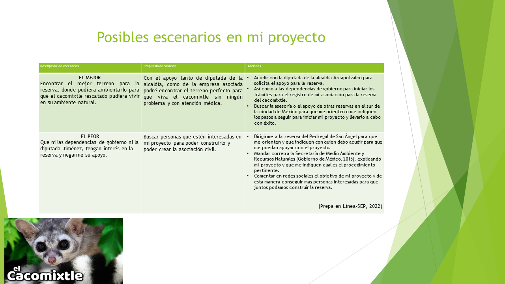
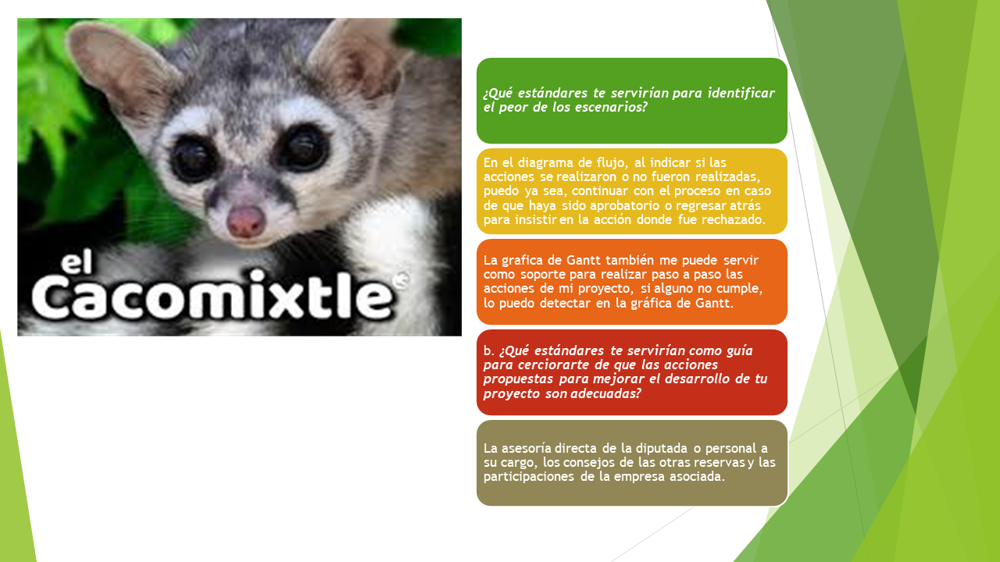
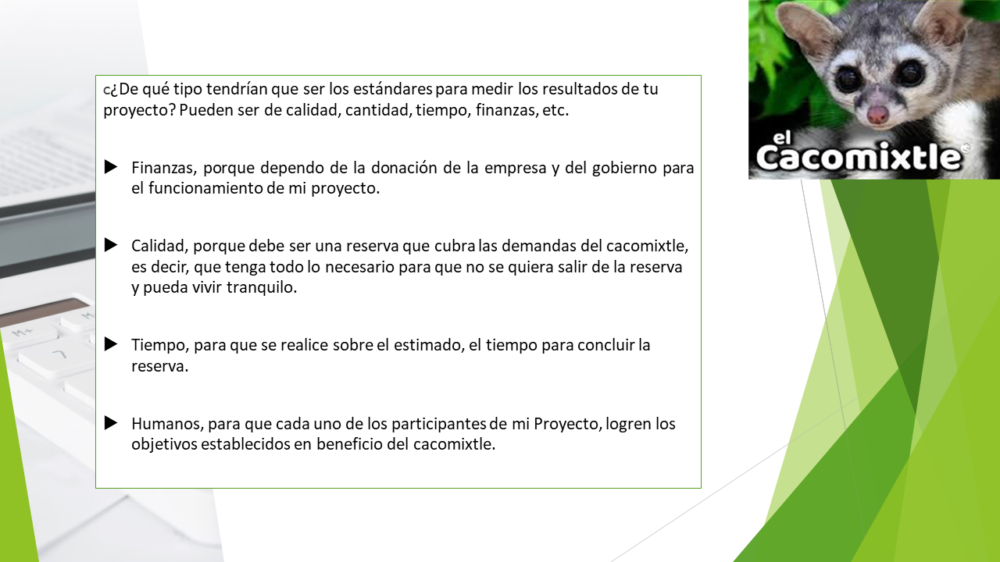
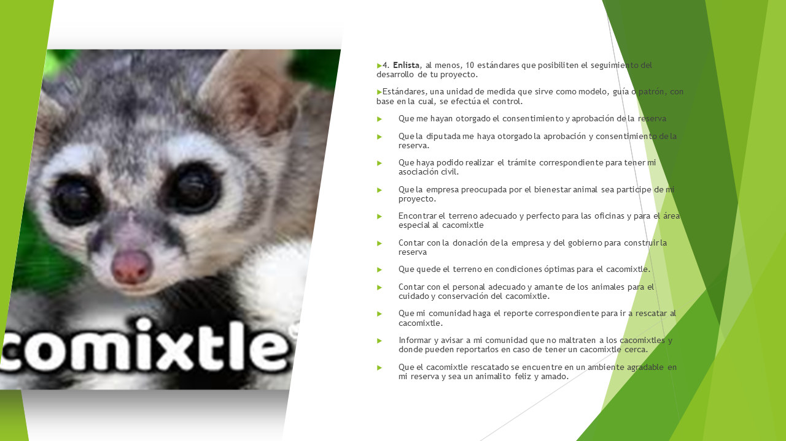
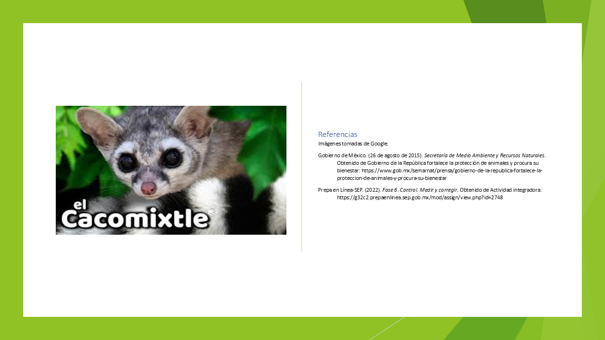

Control
Prepa en Linea SEP
Portada
Página de inicio
Control, medir y corregir
presento mi actividad de fase 6. Control. Medir y Corregir, elaborado en PowerPoint:





Referencias
Diagrama de flujo